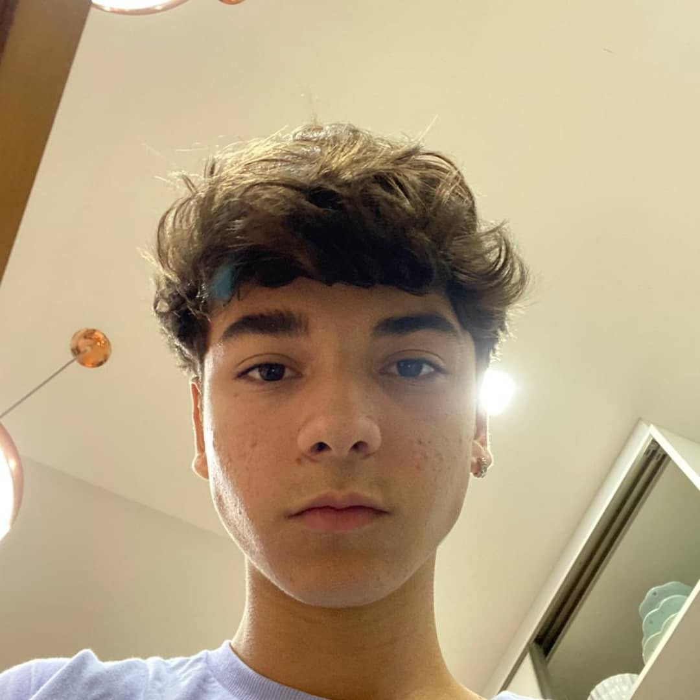

curriculo vitae
Ricardo Matheus Siena

Email:ricardo.siena@alunoescolassociais.org.br
(43) Contato:99990-3847
Brasileiro.
Londrina, parana
15 anos
Rua Abilio Justiniano de Queiroz n°867
Escolaridade
Ensino fundamental 2 (Escola Estadual
Cursando 1° ano do ensino medio (Escola Social Marista Irmao Acacio)
Cursando o tecnico de informatica para internet
objetivos
em busca da minha primeira oportunidade de emprego
habilidades e competencias
bom ouvinte, comunicativo,